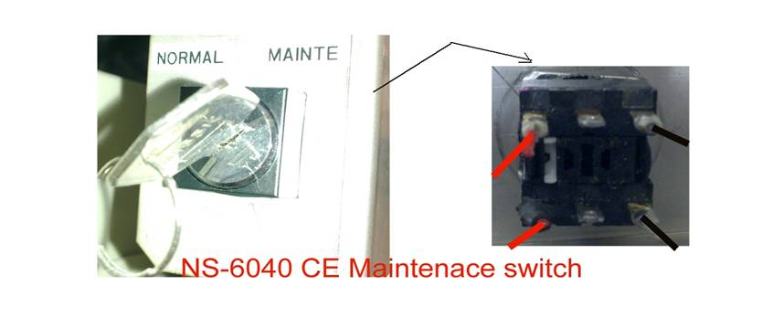
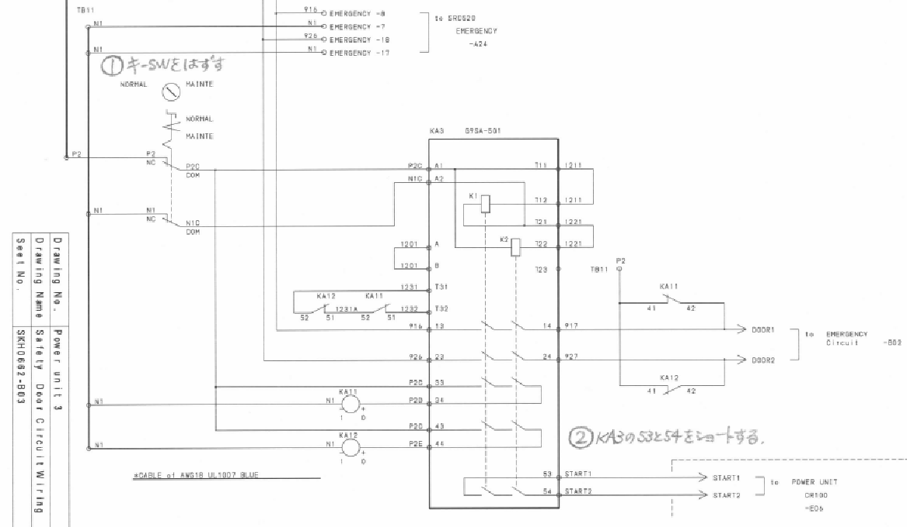

Service History
Subject: Convert NS-6040CE to non-CE for Maintenance switch
Handler Model: NS-6000
Controller: SRC520
Date: 24 Feb 2010
Refer NS-6000 series Wiring Diagram, SKH0662-B03
To convert CE Maintenance/Normal switch to non-CE:
1) Remove the Maintenance/Normal switch
2) Short 53 and 54 on the KA3.


Remarks
Email from Hidaka on 24 Feb 2010.